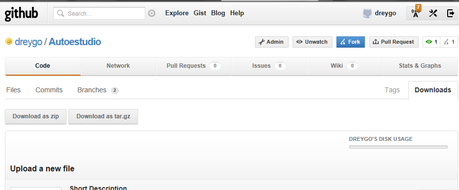

Si usted desea contribuir al proyecto de otra persona, o si desea utilizarlo como punto de partida para arrancar con el suyo. esto se hace con 1 clic en la interfaz web de GitHub

Esto se conoce como "bifurcación".